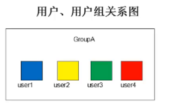
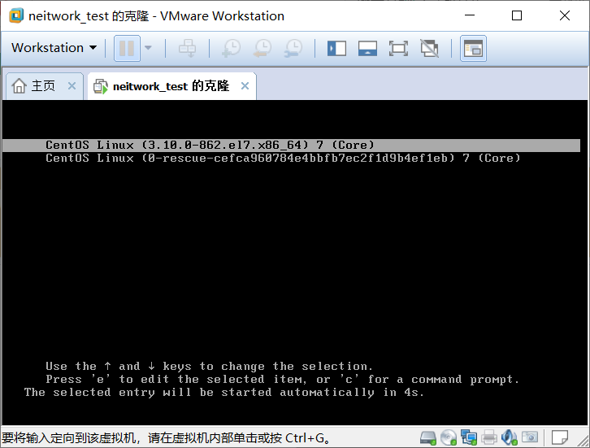
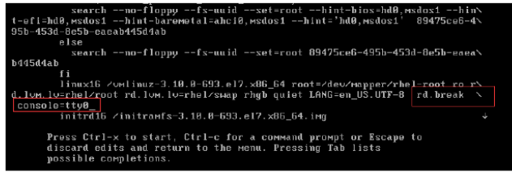
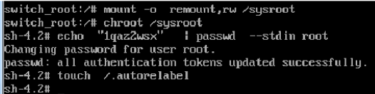
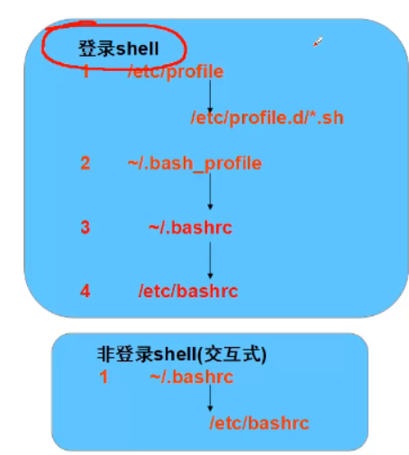
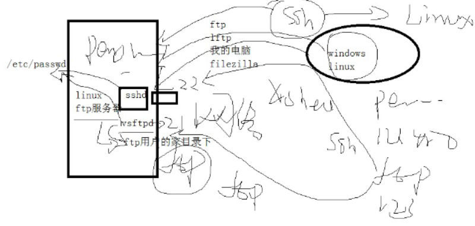
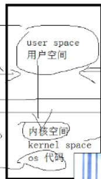

管理用户和组
每个账号都有一个唯一的UID —》身份证
每个组也有一个唯一的GID —》公司—》组织代码
多个账户可以属于同一个组，一个用户可以属于多个组
用户、用户组关系图
- 任何一个用户都会属于一个组，默认情况下用户名和组名是一样的
- 
root ：windows里的超级用户叫administartor
linux里的超级用户是root
- 新建的用户，没有设置密码，是否登录windows系统？ —》可以
- 新建的用户，没有设置密码，是否登录Linux系统？ —》不可以
用户和组背后的问题
- 权限的问题、资源管控的问题
程序 —–》服务—-》进程—–》端口
文本服务ftp —-> vsftpd—>21
网站服务web—–》httpd—-> 80
mysql —->mysqld—->3306
守护进程
- 一直存在在内存里的，一直提供某个服务
用户和组的相关文件详解
和账户相关的文件
新建用户和删除用户的背后就是对文件的操作
/etc/passwd
用于保存用户的账号基本信息
passwd -备份文件，总是少一次操作
1
2
3
4[root@localhost home]# diff /etc/passwd /etc/passwd-
34d33
< hushitian:x:995:993::/home/hushitian:/bin/bash
[root@localhost home]#
每一行对应一个账户的账号记录
1
2
3
4
5[root@localhost httpd]# cat /etc/passwd |tail -3
biu:x:1002:1002::/home/biu:/bin/bash
apache:x:48:48:Apache:/usr/share/httpd:/sbin/nologin
xiaolifd:x:1003:1003::/home/xiaolifd:/bin/bash
[root@localhost httpd]#1
2
3
4
5
6
7
8
9
10[root@localhost httpd]# echo $SHELL
/bin/bash
[root@localhost httpd]# cat /etc/shells
/bin/sh
/bin/bash
/sbin/nologin
/usr/bin/sh
/usr/bin/bash
/usr/sbin/nologin
[root@localhost httpd]#字段
- 字段1：用户账号的名称
- 字段2：用户密码字串或者密码占位符“x”，没什么意义
- 字段3：用户账号的UUID
- 字段4 ：所属基本组账号的GID号
- 字段5：用户描述信息
- 字段6：家目录
- 字段7：登录shell信息 ，默认的shell是/bin/bash
- /sbin/nologin 表示用户不能登录系统
先有用户再有组
新建用户的时候如果不指定组，会自动新建一个与用户名同名的组
[root@localhost httpd]# tailf /var/log/secure
每新建一个用户就会去/etc/passwd文件下追加一行，每每删一个用户就回去/ect/passwd下删一行
/etc/shadow
用于保存密码、密码有效期等信息
文件位置：/etc/shadow
每一行对应一个用户的密码记录
1
2
3
4
5[root@localhost etc]# cat shadow|tail -3
hushi:!!:18171::::::
hushitian:!!:18171::::::
dehua:!!:18172:0:99999:7:::
[root@localhost etc]#字段
- 字段1：用户账号的名称
- 字段2：加密的密码字串信息
- ！！说明该用户没有设置密码
- ！！使用useradd新建的普通用户.
- *:也是说明该用户满意设置密码
- *是相对linux系统内置的用户，系统安装好就有用户，不需要新建的用户
- 用户不设置密码，不能登录系统。但是可以通过其他用户su 切换过去
- root用户切换到普通用户不需要密码，而普通用户切换到root用户或者其他普通用户需要密码
- ！！说明该用户没有设置密码
- 字段3：上次修改密码的时间 以1970-1-1为基准日期
- 字段4：密码的最短有效天数，默认是0
- 字段5：密码的最长有效天数，默认为99999
- 字段6：提前多少天警告用户口令将过期，默认值是7
- 字段7：在密码过期之后多少天禁用此用户，密码到期前给予提醒
- 字段8：账号失效时间，默认值为空
shadow-用来存放备份文件
1
2
3
4
5
6[root@localhost etc]# ls |grep 'shadow'
gshadow
gshadow-
shadow
shadow-
[root@localhost etc]#
/etc/spool/mail
- 用户的邮箱文件
观察系统日志
1.在一个终端里：
1
2
3
4
5
6
7
8
9
10
11[root@localhost httpd]# tailf /var/log/secure
Oct 2 21:12:02 localhost polkitd[661]: Registered Authentication Agent for unix-process:72644:9624589 (system bus name :1.226 [/usr/bin/pkttyagent --notify-fd 5 --fallback], object path /org/freedesktop/PolicyKit1/AuthenticationAgent, locale zh_CN.UTF-8)
Oct 2 21:12:03 localhost polkitd[661]: Unregistered Authentication Agent for unix-process:72644:9624589 (system bus name :1.226, object path /org/freedesktop/PolicyKit1/AuthenticationAgent, locale zh_CN.UTF-8) (disconnected from bus)
Oct 2 22:07:10 localhost useradd[11908]: new group: name=xiaolifd, GID=1003
Oct 2 22:07:10 localhost useradd[11908]: new user: name=xiaolifd, UID=1003, GID=1003, home=/home/xiaolifd, shell=/bin/bash
Oct 2 22:17:08 localhost useradd[24568]: new group: name=linhu, GID=1004
Oct 2 22:17:08 localhost useradd[24568]: new user: name=linhu, UID=1004, GID=1004, home=/home/linhu, shell=/bin/bash
Oct 2 22:17:10 localhost useradd[24611]: new group: name=linhu1, GID=1005
Oct 2 22:17:10 localhost useradd[24611]: new user: name=linhu1, UID=1005, GID=1005, home=/home/linhu1, shell=/bin/bash
Oct 2 22:17:14 localhost useradd[24679]: new group: name=linhu2, GID=1006
Oct 2 22:17:14 localhost useradd[24679]: new user: name=linhu2, UID=1006, GID=1006, home=/home/linhu2, shell=/bin/bash
2.再开启另外一个终端
1
2[root@localhost ~]# useradd hu
[root@localhost ~]#
和组相关的文件
/etc/group
用于存储用户的组的信息
1
2
3
4
5
6
7
8
9
10
11[root@localhost etc]# cat group|tail
linhu2:x:1006:
hu:x:1007:
tss:x:59:
wudang:x:1212:
hushi:x:994:
hushitian:x:993:
tianyp:x:1213:
mingjiao:x:1214:
dehua:x:2234:
biubiu1:x:2235:字段
- 字段1：组账号名
- 字段2 ：x
- 字段3：GID
- 字段4：组成员列表
/etc/gshadow
账户宿主目录中文件来源
新建账户账号时，从/etc/skel目录中复制而来
/etc/skel/*文件
新建用户账号时，复制到用户宿主目录（家目录）中
主要控制用户初始配置文件
.bash_profile :用户每次登录时执行
1
2
3
4
5
6
7
8
9
10
11
12
13#脚本文件，每次登录的时候都执行，放在用户的家目录下
# .bash_profile
# Get the aliases and functions
if [ -f ~/.bashrc ]; then
. ~/.bashrc
fi
# User specific environment and startup programs
PATH=$PATH:$HOME/.local/bin:$HOME/bin
export PATH
.bashrc:每次进入新的bash环境时执行
- .bashrc文件加载的次数要比.bash_profile文件加载的次数要多
.bash_logout:用户每次退出登录时候执行
- 系统注销的时候，会执行这个文件里的命令
.bash_history:记录存放上次注销前使用的历史命令
只要用户注销或是退出系统，Linux系统就会把这个用户使用过的历史命令存放到.bash_history
全新的用户是没有.bash_history的
1
2
3
4
5
6
7
8
9
10
11
12
13
14
15
16#root用户的家目录下
[root@localhost ~]# ls -a|egrep ".bash*"
.bash_history
.bash_logout
.bash_profile
.bashrc
[root@localhost ~]#
#全新的用户是没有.bash_history的
[root@localhost ~]# useradd zhangsan
[root@localhost ~]# su - zhangsan
[zhangsan@localhost ~]$ pwd
/home/zhangsan
[zhangsan@localhost ~]$ ls -a
. .. .bash_logout .bash_profile .bashrc
[zhangsan@localhost ~]$1
2
3
4
5
6
7
8
9
10
11[root@localhost ~]# useradd zhaomin
[root@localhost ~]# cd /home
[root@localhost home]# cat /etc/passwd |grep zhaomin
zhaomin:x:8898:8898::/home/zhaomin:/bin/bash
[root@localhost home]# ls
biu biubiu1 califeng123 heike jsj linhu1 xiaolifd zhaomin
biubiu cali9 dehua hu linhu linhu2 zenguofan zhuxi
[root@localhost home]# cd zhaomin/
[root@localhost zhaomin]# ls -a
. .. .bash_logout .bash_profile .bashrc
[root@localhost zhaomin]#
.bash_history命令：记录存放上次注销前使用的历史命令
1
2
3
4
5
6
7
8
9
10
11
12
13
14
15
16
17
18
19
20
21
22
23
24[root@localhost ~]# useradd zhangsan
[root@localhost ~]# su - zhangsan
[zhangsan@localhost ~]$ pwd
/home/zhangsan
[zhangsan@localhost ~]$ ls -a
. .. .bash_logout .bash_profile .bashrc
[zhangsan@localhost ~]$ cd /lianxi
[zhangsan@localhost lianxi]$ ls -a /lianxi
. all_conf.txt create_user_pwd.sh for.sh?;?exit?quit passwd student.txt
.. back e.txt mobile_phone.txt phone.txt test
9_28.txt beyond.txt for.sh m.patch redirect.txt zhangxueyou.txt
[zhangsan@localhost lianxi]$ exit
登出
[root@localhost ~]# cd /home/zhangsan
[root@localhost zhangsan]# ls
[root@localhost zhangsan]# ls -a
. .. .bash_history .bash_logout .bash_profile .bashrc
[root@localhost zhangsan]# cat .bash_history
pwd
ls -a
cd /lianxi
ls -a /lianxi
exit
[root@localhost zhangsan]#
history -c清除之前用过的命令
1
2
3
4
5
6
7
8
9
10
11
12
13
14
15
16
17
18
19
20
21
22
23
24
25
26[root@localhost skel]# su - zhangsan
上一次登录：四 10月 3 17:36:15 CST 2019pts/1 上
[zhangsan@localhost ~]$ pwd
/home/zhangsan
[zhangsan@localhost ~]$ ls -a
. .. .bash_history .bash_logout .bash_profile .bashrc
[zhangsan@localhost ~]$ mkdir jk
[zhangsan@localhost ~]$ ls
jk
#history 默认可以保存之前使用过最近的1000条命令
[zhangsan@localhost ~]$ history
1 pwd
2 ls -a
3 cd /lianxi
4 ls -a /lianxi
5 exit
6 pwd
7 ls -a
8 mkdir jk
9 ls
10 history
[zhangsan@localhost ~]$ history -c
[zhangsan@localhost ~]$ history
1 history
[zhangsan@localhost ~]$
*/etc/skel *
存放用户登录系统需要的最基本的一些配置文件（样板文件和目录）
1
2
3
4[root@localhost zhangsan]# cd /etc/skel/
[root@localhost skel]# ls -a
. .. .bash_logout .bash_profile .bashrc
[root@localhost skel]#
默认账户的属性文件
/etc/login.defs
对账户初始的属性设置
设置普通用户的UID和GID范围等
1
2
3
4
5
6
7
8
9
10
11
12
13
14
15
16
17
18
19
20
21
22
23
24
25
26
27
28
29
30
31
32
33
34
35
36
37
38
39
40
41
42
43
44
45
46
47
48
49
50
51
52
53
54
55
56
57
58
59
60
61
62
63
64
65
66
67
68
69
70
71
72
73
74
75
76
77
78
79
80
81
82
83
84
85
86
87# Please note that the parameters in this configuration file control the
# behavior of the tools from the shadow-utils component. None of these
# tools uses the PAM mechanism, and the utilities that use PAM (such as the
# passwd command) should therefore be configured elsewhere. Refer to
# /etc/pam.d/system-auth for more information.
#
# *REQUIRED*
# Directory where mailboxes reside, _or_ name of file, relative to the
# home directory. If you _do_ define both, MAIL_DIR takes precedence.
# QMAIL_DIR is for Qmail
#
#QMAIL_DIR Maildir
MAIL_DIR /var/spool/mail
#MAIL_FILE .mail
# Password aging controls:
#
# PASS_MAX_DAYS Maximum number of days a password may be used.
# PASS_MIN_DAYS Minimum number of days allowed between password changes.
# PASS_MIN_LEN Minimum acceptable password length.
# PASS_WARN_AGE Number of days warning given before a password expires.
#
PASS_MAX_DAYS 99999
PASS_MIN_DAYS 0
PASS_MIN_LEN 5
PASS_WARN_AGE 7
#
# Min/max values for automatic uid selection in useradd
#
UID_MIN 1000
UID_MAX 60000
# System accounts
SYS_UID_MIN 201
SYS_UID_MAX 999
#
# Min/max values for automatic gid selection in groupadd
#
GID_MIN 1000
GID_MAX 60000
# System accounts
SYS_GID_MIN 201
SYS_GID_MAX 999
#
# If defined, this command is run when removing a user.
# It should remove any at/cron/print jobs etc. owned by
# the user to be removed (passed as the first argument).
#
#USERDEL_CMD /usr/sbin/userdel_local
#
# If useradd should create home directories for users by default
# On RH systems, we do. This option is overridden with the -m flag on
# useradd command line.
#
CREATE_HOME yes
# The permission mask is initialized to this value. If not specified,
# the permission mask will be initialized to 022.
UMASK 077
# This enables userdel to remove user groups if no members exist.
#
USERGROUPS_ENAB yes
# Use SHA512 to encrypt password.
ENCRYPT_METHOD SHA512
用户、组操作
- 主要组 （基本组、初始组）
- 与用户相关的默认组，在/etc/passwd文件的第四个字段定义
- 次要组（附属组）
- 用户可以同时属于其他的组，在/etc/group文件的第4个字段定义
用户分类：超级用户、程序用户、普通用户
超级用户root
1
root:x:0:0:root:/root:/bin/bash
root用户的家目录在/root
程序用户:实现特定的功能（开启ftp服务、http服务、关机、MySQL服务等），但是一般不能登录系统：uid在1-499 (centos6)/201-999(centos7)
1
apache:x:48:48:Apache:/usr/share/httpd:/sbin/nologin
程序用户不需要手动新建，一般会自动新建
- 1.安装某个程序的时候，例如：httpd、ftp、mysql
- 2.安装好linux系统，就有的
程序用户体现价值所在：启动服务（mysql、Apache）和访问服务（ftp）
普通用户：使用useradd命令新建的用户，一般uid从1000（centos7）/500(centos6)开始，每新建一个用户，uid会自动加1
默认情况下普通用户的家目录在/home目录下，会和用户名同名
1
2
3
4
5
6
7
8[root@localhost home]# su - baimeilyw
[baimeilyw@localhost ~]$ mkdir wuji
[baimeilyw@localhost ~]$ ll
总用量 0
drwxr-xr-x. 2 baimeilyw tianyp 6 10月 3 11:40 wuji
[baimeilyw@localhost ~]$ mkdir /lianxiwuji
mkdir: 无法创建目录"/lianxiwuji": 权限不够
[baimeilyw@localhost ~]$
默认情况下，普通用户只能在自己的家目录和/tmp下建文件夹，在其他大多地方不能建，除非授权
UID（用户标 识号）
- 超级用户root的UID为0
- 程序用户的UID
- centos6:1-499
- centos 7 :201-999
- 普通用户的UID大于等 于500
useradd、userdel、groupadd 、groupdel、usermod 、passwd、id 、w
LINUX中只认UID来认定用户身份
useradd
格式：useradd 【选项】…用户名
常用选项：
-u :指定UID标记号
-d:指定宿主目录，缺省为/home/用户名
-e :指定账号失效时间
-g :指定用户的基本组名（或GID号）
-G：指定用户的附加组名（或GID号）
-M ：不为用户建立并初始化宿主目录
-s :指定用户的登录shell
-c:用户注释描述信息
-r :新建系统用户，不会有新建家目录
1
[root@localhost ftp]# useradd -r hushitian
1
2
3
4
5[root@localhost ftp]# useradd -u 1212 -g 1212 -s /bin/bash -c "teacher" -d /home/califeng123 -G 0 -e "2018-1-1" cali123
useradd：用户“cali123”已存在
[root@localhost ftp]# cat /etc/passwd |grep "cali123"
cali123:x:1212:1212:teacher:/home/califeng123:/bin/bash
[root@localhost ftp]#useradd命令在后台到底做了哪些工作？
userdel
userdel 【-r 】用户名
添加 -r 选项时候，表示连用户的宿主目录一并删除
1
2
3
4
5[root@localhost home]# userdel baimeilyw
[root@localhost home]# ls
baimeiyw biu biubiu califeng123 hu jsj linhu linhu1 linhu2 xiaolifd[root@localhost home]# ls /var/spool/mail
baimeilyw biu biubiu cali123 hu jsj linhu linhu1 linhu2 xiaolifd
[root@localhost home]#
1
2
3
4
5
6
7
8
9
10[root@localhost home]# useradd baimeiyw
useradd：警告：此主目录已经存在。
不从 skel 目录里向其中复制任何文件。
[root@localhost home]# userdel baimeilyw -r
userdel：用户“baimeilyw”不存在
之前的baimeilyw用户的UID是2234 ，现在新建的baimeiyw的UID是1215，两个虽然名字家目录名称相同但是两个不同的目录
[root@localhost home]# userdel baimeiyw -r
userdel：/home/baimeiyw 并不属于 baimeiyw，所以不会删除
[root@localhost home]#
usermod
修改用户信息
格式：usermod 【选项】…用户名
1
2
3
4
5
6[root@localhost ~]# id baimeiyw
uid=2333(baimeiyw) gid=1213(tianyp) 组=1213(tianyp),1214(mingjiao)
[root@localhost ~]# usermod -u 2234 baimeiyw
[root@localhost ~]# id baimeiyw
uid=2234(baimeiyw) gid=1213(tianyp) 组=1213(tianyp),1214(mingjiao)
[root@localhost ~]# usermod -l baimeiyw baimeilyw
常用选项：
-l :更改用户账号的登录名称
1
2
3
4[root@localhost ~]# usermod -l baimeilyw baimeiyw
[root@localhost ~]# id 2234
uid=2234(baimeilyw) gid=1213(tianyp) 组=1213(tianyp),1214(mingjiao)
[root@localhost ~]#
-L:锁定用户账号
-U：解锁用户账户
以下选项与useradd命令中的含义相同
- -u,-d,-e,-g,-G,-s
1
2
3
4
5
6
7
8
9
10
11
12
13[root@localhost ~]# cat /etc/passwd |tail -3
cali123:x:1212:1212:teacher:/home/califeng123:/bin/bash
hushi:x:996:994::/home/hushi:/bin/bash
hushitian:x:995:993::/home/hushitian:/bin/bash
[root@localhost ~]# usermod -u 1214 -g wudang -s /bin/sh hushi
[root@localhost ~]# cat /etc/passwd |tail -3
cali123:x:1212:1212:teacher:/home/califeng123:/bin/bash
hushi:x:1214:1212::/home/hushi:/bin/sh
hushitian:x:995:993::/home/hushitian:/bin/bash
[root@localhost ~]#
[root@localhost ~]# id hushi
uid=1214(hushi) gid=1212(wudang) 组=1212(wudang)
[root@localhost ~]#1
2
3
4[root@localhost ~]# su - cali123
[cali123@localhost ~]$ pwd
/home/califeng123
[cali123@localhost ~]$
passwd
格式 ：passwd【选项】… 用户名
1
2
3
4
5
6
7
8
9
10
11
12
13
14
15
16
17
18
19
20
21
22#交互式修改密码
[root@localhost etc]# cat /etc/shadow |tail -3
hushitian:!!:18171::::::
dehua:!!:18172:0:99999:7:::
biubiu1:!!:18172:0:99999:7::18173:
[root@localhost etc]# passwd biubiu1
更改用户 biubiu1 的密码 。
新的 密码：
无效的密码： 密码少于 8 个字符
重新输入新的 密码：
passwd：所有的身份验证令牌已经成功更新。
[root@localhost etc]# cat /etc/shadow |tail -3
hushitian:!!:18171::::::
dehua:!!:18172:0:99999:7:::
biubiu1:$6$3yws16hw$9/tFOQALoamGSCETRXM75.k4ehEpEkI6yWIxnVBjAZ/Jhxfxzhs4hYx35ElX9RaLSEWAudVT.mDs9iYpp9pkC1:18172:0:99999:7::18173:
[root@localhost etc]#
#非交互式修改
[root@localhost etc]# echo 123|passwd dehua --stdin
更改用户 dehua 的密码 。
passwd：所有的身份验证令牌已经成功更新。
[root@localhost etc]#
常用命令选项
-d :清空用户的密码，是指无需密码即可登录
1
2
3
4
5
6[root@localhost etc]# passwd -d dehua
清除用户的密码 dehua。
passwd: 操作成功
[root@localhost etc]# cat shadow|tail -3
hushitian:!!:18171::::::
dehua::18172:0:99999:7:::
-l:锁定用户账号
1
2
3
4
5
6[root@localhost etc]# passwd -l dehua
锁定用户 dehua 的密码 。
passwd: 操作成功
[root@localhost etc]# cat shadow|tail -3
hushitian:!!:18171::::::
dehua:!!:18172:0:99999:7:::
-S:查看用户账号的状态（是否被锁定）
1
2
3[root@localhost etc]# passwd -S dehua
dehua LK 2019-10-03 0 99999 7 -1 (密码已被锁定。)
[root@localhost etc]#
-u :解锁用户账号
1
2
3
4
5
6
7
8
9
10
11
12
13
14
15
16
17[root@localhost etc]# passwd -u dehua
解锁用户 dehua 的密码。
passwd: 警告：未锁定的密码将是空的。
passwd: 不安全的操作(使用 -f 参数强制进行该操作)
[root@localhost etc]# cat shadow|tail -3
hushitian:!!:18171::::::
dehua:!!:18172:0:99999:7:::
biubiu1:$6$3yws16hw$9/tFOQALoamGSCETRXM75.k4ehEpEkI6yWIxnVBjAZ/Jhxfxzhs4hYx35ElX9RaLSEWAudVT.mDs9iYpp9pkC1:18172:0:99999:7::18173:
[root@localhost etc]# passwd -uf dehua
解锁用户 dehua 的密码。
passwd: 操作成功
[root@localhost etc]# cat shadow|tail -3
hushitian:!!:18171::::::
dehua::18172:0:99999:7:::
biubiu1:$6$3yws16hw$9/tFOQALoamGSCETRXM75.k4ehEpEkI6yWIxnVBjAZ/Jhxfxzhs4hYx35ElX9RaLSEWAudVT.mDs9iYpp9pkC1:18172:0:99999:7::18173:
[root@localhost etc]#
–stdin:接收别的命令stdout作为stdin标准输入作为密码
注意
- root用户可以修改所有用户的密码，不要求复杂性
- 普通用户只能修改自己的密码，要求复杂性
*groupadd *
格式：groupadd 【-g GID】组账户名
1
2
3
4
5
6
7
8
9
10
11
12
13[root@localhost etc]# groupadd -g 10001 yuelushuyuan
[root@localhost etc]# cat group|tail
hu:x:1007:
tss:x:59:
wudang:x:1212:
hushi:x:994:
hushitian:x:993:
tianyp:x:1213:
mingjiao:x:1214:
dehua:x:2234:
biubiu1:x:2235:
yuelushuyuan:x:10001:
[root@localhost etc]#1
2
3
4
5
6
7
8[root@localhost etc]# useradd -g yuelushuyuan zenguofan
[root@localhost etc]# id zenguofan
uid=2236(zenguofan) gid=10001(yuelushuyuan) 组=10001(yuelushuyuan)
[root@localhost etc]# useradd -g yuelushuyuan zhuxi
[root@localhost etc]# useradd -g 10001 cali9
[root@localhost etc]# cat /etc/group|grep yuelushuyuan
yuelushuyuan:x:10001:
[root@localhost etc]#
groupdel
格式：groupdel 组账户名
如果有个用户的主要组是xx,则不能直接删除这个xx组
1
2
3
4
5
6
7
8
9
10
11
12
13
14
15
16
17[root@localhost etc]# groupdel yuelushuyuan
groupdel：不能移除用户“zenguofan”的主组
[root@localhost etc]#
[root@localhost etc]# groupdel yuelushuyuan
groupdel：不能移除用户“zenguofan”的主组
[root@localhost etc]# usermod -g wudang zhuxi
[root@localhost etc]# id zhuxi
uid=2237(zhuxi) gid=1212(wudang) 组=1212(wudang)
[root@localhost etc]# usermod -g wudang zenguofan
[root@localhost etc]# id zenguofan
uid=2236(zenguofan) gid=1212(wudang) 组=1212(wudang)
[root@localhost etc]# usermod -g wudang cali9
[root@localhost etc]# id cali9
uid=2238(cali9) gid=1212(wudang) 组=1212(wudang)
[root@localhost etc]# groupdel yuelushuyuan
[root@localhost etc]#
groupmod
用途：设置组名和组id
格式：groupmod 【选项】…组账号名
常见命令选项
- -n :修改组名
- -g :修改组id
1
2
3
4[root@localhost etc]# groupmod -g 11223 wudang
[root@localhost etc]# id cali9
uid=2238(cali9) gid=11223(wudang) 组=11223(wudang)
[root@localhost etc]#
newgrep
- 用途：临时改变有效组
- 用户必须是要改变组的成员
gpasswd
用途：设置组账号密码（极少用）、添加/删除组成员
格式：gpasswd【选项】…组账号名
常用命令选项
-a :向组内添加一个用户
1
2
3
4
5[root@localhost etc]# gpasswd -a cali9 root
正在将用户“cali9”加入到“root”组中
[root@localhost etc]# id cali9
uid=2238(cali9) gid=11223(wudang) 组=11223(wudang),0(root)
[root@localhost etc]#
-d:从组内删除一个用户成员
1
2
3
4
5[root@localhost etc]# gpasswd -d cali9 root
正在将用户“cali9”从“root”组中删除
[root@localhost etc]# id cali9
uid=2238(cali9) gid=11223(wudang) 组=11223(wudang)
[root@localhost etc]#
-M:定义组成员列表，以逗号分割
1
2
3
4
5
6
7
8
9
10[root@localhost etc]# gpasswd -M cali9,biubiu1 root
[root@localhost etc]# id cali9
uid=2238(cali9) gid=11223(wudang) 组=11223(wudang),0(root)
[root@localhost etc]# id biubiu1
uid=2235(biubiu1) gid=2235(biubiu1) 组=2235(biubiu1),0(root)
[root@localhost etc]#
[root@localhost etc]# cat /etc/group |grep root
root:x:0:cali9,biubiu1
[root@localhost etc]#
id
- 用途：查询用户身份标识
- 格式：id 【用户名】
who、w、users命令
- 用途：查询已登录到主机的用户信息
- w比who显示的信息更多
groups命令
- 用途：查询用户所属的组
lats、lastlog命令
last
查询最近哪些用户登录 —-》必须是登录过的
1
2
3
4
5
6
7
8[root@localhost mail]# last
root pts/4 192.168.0.23 Thu Oct 3 12:58 - 13:04 (00:06)
root pts/3 192.168.0.12 Thu Oct 3 12:44 still logged in
root pts/2 192.168.0.12 Thu Oct 3 12:38 - 14:54 (02:15)
root pts/1 192.168.0.12 Thu Oct 3 11:25 - 14:47 (03:21)
root pts/0 192.168.0.12 Thu Oct 3 10:41 - 14:04 (03:23)
root pts/2 192.168.8.9 Wed Oct 2 23:13 - 00:42 (01:29)
root pts/0 192.168.0.67 Wed Oct 2 22:32 - 23:26 (00:53)
lastlog
查询哪些用户登陆过，哪些用户从未登陆过 —》只要是用户
1
2
3
4
5
6
7
8
9
10
11[root@localhost mail]# lastlog
用户名 端口 来自 最后登陆时间
root pts/4 192.168.0.23 四 10月 3 12:58:06 +0800 2019
bin **从未登录过**
daemon **从未登录过**
adm **从未登录过**
lp **从未登录过**
sync **从未登录过**
shutdown **从未登录过**
halt **从未登录过**
mail **从未登录过**

手动建立用户案例、破解root用户密码、营救模式
手动新建用户
要求：用户名为zhouyu 家目录：/dongwu/sangzhi uid ：8896 组名：dongwu gid:8895 shell:/bn/bash 注释为wu guo dudu 密码为空
步骤
1.创建
/etc/passwd
1
2- [root@localhost etc]# vim /etc/passwd
- zhouyu:x:8896:8895:wu guo dudu:/dongwu/sangzhi:/bin/bash
/etc/shadow
1
2- [root@localhost etc]# vim /etc/shadow
- zhouyu:!!:18172:0:99999:7:::
/etc/group
1
2[root@localhost etc]# vim /etc/group
dongwu:x:8895:
家目录
1
[root@localhost etc]# mkdir /dongwu/sangzhi -p
/etc/skel/*
1
2
3
4
5
6[root@localhost etc]# cd /dongwu/sangzhi/
[root@localhost sangzhi]# cp /etc/skel/.bash* .
[root@localhost sangzhi]# ls
[root@localhost sangzhi]# ls -a
. .. .bash_logout .bash_profile .bashrc
[root@localhost sangzhi]#
/var/spool/mail/
1
2
3[root@localhost sangzhi]# cd /var/spool/mail/
[root@localhost mail]# touch zhouyu
[root@localhost mail]#
2.验证
1
2
3
4
5
6
7[root@localhost mail]# su - zhouyu
[zhouyu@localhost ~]$ pwd
/dongwu/sangzhi
[zhouyu@localhost ~]$ ls -a
. .. .bash_logout .bash_profile .bashrc
[zhouyu@localhost ~]$
更改权限
3.更改权限
1
2
3
4
5
6
7
8
9
10
11
12
13
14
15
16
17
18
19
20
21
22
23
24
25
26
27
28- [root@localhost mail]# chown -R zhouyu:dongwu /dongwu/sangzhi/
[root@localhost mail]# ll /dongwu/sangzhi/ -d
drwxr-xr-x. 2 zhouyu dongwu 62 10月 3 14:57 /dongwu/sangzhi/
[root@localhost mail]#
- [root@localhost mail]# ll -a /dongwu/sangzhi/
总用量 12
drwxr-xr-x. 2 zhouyu dongwu 62 10月 3 14:57 .
drwxr-xr-x. 3 root root 21 10月 3 14:48 ..
-rw-r--r--. 1 zhouyu dongwu 18 10月 3 14:57 .bash_logout
-rw-r--r--. 1 zhouyu dongwu 193 10月 3 14:57 .bash_profile
-rw-r--r--. 1 zhouyu dongwu 231 10月 3 14:57 .bashrc
[root@localhost mail]#
#修改邮箱的权限
[root@localhost mail]# chown zhouyu:mail /var/spool/mail/zhouyu
[root@localhost mail]# ll zhouyu
-rw-r--r--. 1 zhouyu dongwu 0 10月 3 14:59 zhouyu
[root@localhost mail]#
[root@localhost mail]# chmod 660 zhouyu
[root@localhost mail]# ll zhouyu
-rw-rw----. 1 zhouyu dongwu 0 10月 3 14:59 zhouyu
[root@localhost mail]#
#修改权限使只能owner有读写执行的权限
[root@localhost mail]# chmod 700 /dongwu/sangzhi/
[root@localhost mail]# ll -d /dongwu/sangzhi/
drwx------. 2 zhouyu dongwu 62 10月 3 14:57 /dongwu/sangzhi/
[root@localhost mail]#
4.再验证
1
2
3
4
5
6
7
8
9
10
11[root@localhost mail]# su - zhouyu
上一次登录：四 10月 3 15:00:13 CST 2019pts/3 上
[zhouyu@localhost ~]$ pwd
/dongwu/sangzhi
[zhouyu@localhost ~]$ ll
总用量 0
[zhouyu@localhost ~]$ mkdir xiaoqiao
[zhouyu@localhost ~]$ ll
总用量 0
drwxr-xr-x. 2 zhouyu dongwu 6 10月 3 15:11 xiaoqiao
[zhouyu@localhost ~]$
破解root用户的密码
root 用户可以更改任何用户的密码，普通用户只能修改自己的密码
root密码破解步骤
centos 6
- 1.重新启动系统
- 2.开机倒数时间内，敲任意键
- 3.按字母e去编辑
- 4.选择kernel开头的行，再次按e编辑，然后敲空格
- 输入数字1，再敲回车，进入单用户模式，破解密码。次模式绕过密码验证
- 5.按字母b,去引导进入系统
- 6.直接passwd或者修改root用户的密码
- 7.输入init 6 或者init 3 进入系统，或者reboot 重新启动系统
centos 7:
- 1.重启服务器，在Centos 7 操作系统启动到GRUB界面时候，按”e”进入编辑模式
- 
- 2.找到Linux16的一行，在最后添加”rd.break console=tty0” ,按“Ctrl + x”键进入恢复模式。
- 
- 3.以可写的模式重新挂载根系统分区。 mout -o remount,rw /sysroot
- 4.切换到根系统分区. chroot /sysroot/
- 5.修改root户密码。 echo “密码”|passwd –stdin root
- 6.重新标记系统selinux安全标签。 touch /.autorelabel
- 
- 7.重新启动服务器即可 。exit ,reboot
- 1.重启服务器，在Centos 7 操作系统启动到GRUB界面时候，按”e”进入编辑模式
vim /etc/inittab
- 0 halt 关机
- 1 单用户模式 —》破解密码的时候
- 2 多用户模式 —–》不能使用NFS功能
- 3 完全多用户模式，可以使用网络功能 —-》字符界面
- 5 图形界面
- 6 重新启动
===============================
init 0 关机 poweroff halt shutdown -h now
init 6 重新启动 reboot shutdown -r now
init 3 进入字符界面
runlevel 查看当前运行jibie
1 s 1代表开机进入的运行模式 s 代表当前的运行级别
s 3 说明是从单用户切换到运行级别3
营救模式（rescue mode)
1.什么是营救模式
- 系统进入无法正常启动进入，卡在某个位置等情况下。我们需要拷贝原来磁盘里的数据或者对原来的系统进行修复，这个时候就需要进入营救模式，进行紧急救援。
2.模拟破坏系统模式
删除/etc/passwd文件，通过原来的备份文件进行恢复
步骤
2.1备份到win机器或者其他机器里
1
2
3- [root@localhost ~]# yum install -y lrzsz
- [root@localhost ~]# sz /etc/passwd
[root@localhost ~]#
2.2 本地也做了备份
1
2
3
4
5
6[root@localhost ~]# mkdir /backup
mkdir: 无法创建目录"/backup": 文件已存在
[root@localhost ~]# cp /etc/passwd /backup/passwd
[root@localhost ~]# cd /backup/
[root@localhost backup]# ls
passwd zhuwenjie_t1.sql
2.3删除/etc/passwd 文件
1
[root@localhost backup]# rm -rf /etc/passwd
2.4重新启动Linux系统，看是否能正常进入
3.如何进入营救模式
- 1.使用光盘进入
- 步骤
- 1.放入系统光盘（redhat 、centos 、ubuntu都可以）
- 2.设置引导顺序（第1启动顺序）从光盘启动
- 选择rescue installed system 进入营救模式
- rescue method —>local cd /dvd
- chroot /mnt/sysimage 切换带=跟环境到原来本身系统里的根
- cp /etc/passwd- /etc/passwd
- 3.exit
- 4.reboot
- 注
- BIOS:基本输入输出系统：主板里
- 台式机：del
- 笔记本：F1,F2,F8+fn
- 服务器：
- BIOS:基本输入输出系统：主板里
- 步骤
- 1.使用光盘进入
其他问题
Q1:用户量特别多的时候？多态Linux服务器集中认证，用户可以在任何一台机器上登录
- ldap —–>开源、 成熟的解决方案
- 自己开发，采用数据库存储用户名和密码
- mysql oracle mariadb等
Q2：如何将已经登录系统的用户踢出系统并防止他再次登录？
1.踢出可疑的登录用户，马上修改密码
方法1
1
2
3
4
5
6
7
8
9
10
11
12
13
14
15
16
17
18
19
20
21
22
23
24
25
26
27#在root 终端中看到heike用户已经登录
[root@localhost mail]# w
16:25:05 up 1 day, 10:51, 3 users, load average: 0.49, 0.32, 0.25
USER TTY FROM LOGIN@ IDLE JCPU PCPU WHAT
root tty1 六22 3:40m 0.61s 0.61s -bash
heike pts/0 192.168.0.12 16:23 1:37 0.00s 0.00s -bash
root pts/3 192.168.0.12 12:44 1.00s 0.52s 0.00s w
#使用ps aux|grep出 bash的进程 发现heike的进程号为17922
[root@localhost mail]# ps aux |grep bash
root 1578 0.0 0.1 115432 2072 tty1 Ss+ 10月02 0:00 -bash
root 7467 0.0 0.1 115616 2296 pts/3 Ss 12:44 0:00 -bash
heike 17922 0.0 0.1 115560 2052 pts/0 Ss+ 16:23 0:00 -bash
root 24901 0.0 0.0 112724 980 pts/3 S+ 16:29 0:00 grep --color=auto bash
[root@localhost mail]#
#kill -9 杀死进程
[root@localhost mail]# kill -9 17922
[root@localhost mail]#
#再查看已经把heike账户踢出
[root@localhost mail]# w
16:30:06 up 1 day, 10:56, 2 users, load average: 0.08, 0.17, 0.20
USER TTY FROM LOGIN@ IDLE JCPU PCPU WHAT
root tty1 六22 3:45m 0.61s 0.61s -bash
root pts/3 192.168.0.12 12:44 6.00s 0.53s 0.00s w
[root@localhost mail]#1
2
3
4
5
6
7
8
9
10
11
12
13
14
15#黑客这边的终端已经失去连接
[heike@localhost ~]$ w
16:23:28 up 1 day, 10:49, 3 users, load average: 0.55, 0.24, 0.21
USER TTY FROM LOGIN@ IDLE JCPU PCPU WHAT
root tty1 六22 3:39m 0.61s 0.61s -bash
heike pts/0 192.168.0.12 16:23 0.00s 0.01s 0.01s w
root pts/3 192.168.0.12 12:44 1:04 0.47s 0.47s -bash
[heike@localhost ~]$ Connection closing...Socket close.
Connection closed by foreign host.
Disconnected from remote host(heike) at 16:29:52.
Type `help' to learn how to use Xshell prompt.
[G:\~]$方法2：
使用pkill 杀死这个终端进程
1
2
3
4
5
6
7
8
9
10
11
12
13[root@localhost ~]# w
16:33:16 up 1 day, 10:59, 3 users, load average: 0.17, 0.16, 0.19
USER TTY FROM LOGIN@ IDLE JCPU PCPU WHAT
root tty1 六22 3:48m 0.61s 0.61s -bash
heike pts/0 192.168.0.12 16:32 1:11 0.01s 0.01s -bash
root pts/1 192.168.0.12 16:33 4.00s 0.02s 0.01s w
[root@localhost ~]# pkill -9 -t pts/0
[root@localhost ~]# w
16:33:44 up 1 day, 11:00, 2 users, load average: 0.18, 0.16, 0.19
USER TTY FROM LOGIN@ IDLE JCPU PCPU WHAT
root tty1 六22 3:49m 0.61s 0.61s -bash
root pts/1 192.168.0.12 16:33 0.00s 0.02s 0.00s w
[root@localhost ~]#
使他登录不了
将shell类型改成/sbin/nlogin
1
2
3
4
5
6
7
8
9
10
11
12
13
14
15
16
17
18
19
20
21- [root@localhost ~]# vim /etc/passwd
- heike:x:8897:8897::/home/heike:/sbin/nologin
[root@localhost ~]# w
16:48:29 up 1 day, 11:14, 3 users, load average: 0.29, 0.32, 0.26
USER TTY FROM LOGIN@ IDLE JCPU PCPU WHAT
root tty1 六22 4:04m 0.61s 0.61s -bash
heike pts/0 192.168.0.12 16:44 3:52 0.00s 0.00s -bash
root pts/1 192.168.0.12 16:33 5.00s 0.03s 0.00s w
[root@localhost ~]# ps aux|grep bash
root 1578 0.0 0.1 115432 2072 tty1 Ss+ 10月02 0:00 -bash
root 30096 0.0 0.1 115436 2120 pts/1 Ss 16:33 0:00 -bash
heike 44287 0.0 0.1 115560 2056 pts/0 Ss+ 16:44 0:00 -bash
root 49419 0.0 0.0 112724 984 pts/1 S+ 16:48 0:00 grep --color=auto bash
[root@localhost ~]# kill -9 44287
[root@localhost ~]# w
16:49:12 up 1 day, 11:15, 2 users, load average: 0.22, 0.29, 0.25
USER TTY FROM LOGIN@ IDLE JCPU PCPU WHAT
root tty1 六22 4:04m 0.61s 0.61s -bash
root pts/1 192.168.0.12 16:33 0.00s 0.04s 0.00s w
[root@localhost ~]#
2.sshd拒绝某个IP连接
1
2
3#拒绝192.168.0.176主机访问过来，不管你使用的是哪个用户
[root@localhost ~]# vim /etc/hosts.deny
sshd: 192.168.0.176
Q3：shell 启动配置文件的区别
/etc/profile :配置全局环境变量，影响所有用户
~/.bash_profile :配置个人环境，影响一个用户
/etc/bashrc:配置全局的别名或者shell选项，影响所有用户
~/.bashrc :配置个人别名或者shell选项，影响一个用户
注：
- 用户登录系统—-》~/.bash_profile —–>./bashrc—–>/etc/bashrc
- 用户注销系统 ——->
/.bash_logout 和历史命令——–>/.bash_history
bash的启动脚本初始化
- 
修改历史命令的条数让其立即生效
source /etc/profile 执行/etc/profile文件，让修改的立即生效
1
2
3
4
5
6
7
8
9
10
11
12
13
14
15[root@localhost ~]# vim /etc/profile ---定义了系统里很多的环境变量
[root@localhost ~]# env |grep HISTORY
[root@localhost ~]# env |grep HIST
HISTSIZE=1000
HISTCONTROL=ignoredups
[root@localhost ~]#
[root@localhost ~]# bash
[root@localhost ~]# env |grep HIST
HISTSIZE=1000
HISTCONTROL=ignoredups
[root@localhost ~]# source /etc/profile
[root@localhost ~]# env |grep HIST
HISTSIZE=2000
HISTCONTROL=ignoredups
[root@localhost ~]#
打扫行踪，不让别人知道你使用过哪些命令
- 1.history -c
- 2.删除rm -rf /root/.bash_history
- 3.在/root/.bash_logout 文件里添加history -c
Q4：su 切换的时候加-号和不加的区别
1
2
3
4
5
6
7
8
9
10
11
12
13[root@localhost ~]# su - cali
su: user cali does not exist
[root@localhost ~]# su - cali9
[cali9@localhost ~]$ pwd
/home/cali9
[cali9@localhost ~]$ exit
登出
[root@localhost ~]# su cali
su: user cali does not exist
[root@localhost ~]# su cali9
[cali9@localhost root]$ pwd
/root
[cali9@localhost root]$区别：如果不接-号，系统会使用上一个用户的环境变量，如果接-好，相当于使用后面的用户的环境变量，跟前面的用户没有关系了
Q5:有黑客登录到Linux系统，如何能将其踢出系统？
- 1.马上修改root密码
- 2.杀死他连接进入的bash进程，备份重要的文件
- 3.查看ssh的日志，/etc/passwd
- 4.其他的重要应用程序安全检查
- 5.检查异常的进程 —-》木马程序
- 6.最后可以重新安装系统
脚本案例
写一个脚本，新建5个用户，用户名的前缀为cali，例如：cali1 cali2,到cali5 ,5个用户的密码为123456cali ,家目录在/cali 目录下与用户同名
1.需求分析
- 使用什么命令来实现、什么功能算法
- useradd 、passwd、for
- 使用什么命令来实现、什么功能算法
2.开始给脚本起名字
- create_user.sh
3.运行调试
4.完善功能
补充
ftp服务
安装 yum intsall vsftpd -y
yum install lftp ftp -y 安装ftp客户端
- lftp 是比ftp更好用的客户端工具，不需要指定用户名和密码，默认使用ftp登录
登录ftp
1
2
3
4
5
6
7
8
9
10[root@localhost ~]# ftp 192.168.0.14
Connected to 192.168.0.14 (192.168.0.14).
220 (vsFTPd 3.0.2)
Name (192.168.0.14:root): ftp
331 Please specify the password.
Password:
230 Login successful.
Remote system type is UNIX.
Using binary mode to transfer files.
ftp>
ftp用户登录之后，登录到服务器的哪个文件夹里了？
- 会登录到ftp的家目录
1
2
3
4
5
6
7
8[root@localhost ~]# cat /etc/passwd|grep ftp
ftp:x:14:50:FTP User:/var/ftp:/sbin/nologin
[root@localhost ~]# cd /var/ftp
[root@localhost ftp]# ls
iso pub
[root@localhost ftp]# pwd
/var/ftp
[root@localhost ftp]#

远程登录
远程登录，使用的登录用户是penglong
1
2
3
4
5
6
7
8
9
10
11
12
13
14
15
16
17
18
19[root@localhost ~]# useradd penglong
[root@localhost ~]# passwd penglong
更改用户 penglong 的密码 。
新的 密码：
无效的密码： 密码少于 8 个字符
重新输入新的 密码：
passwd：所有的身份验证令牌已经成功更新。
[root@localhost ~]# ssh penglong@192.168.0.14
The authenticity of host '192.168.0.14 (192.168.0.14)' can't be established.
ECDSA key fingerprint is SHA256:QOz9HLsBF+ns2l/A90tdzhm3VdoCi1ROjNNIip4jssA.
ECDSA key fingerprint is MD5:95:b5:b6:61:b3:f4:bd:2b:1c:ee:e3:75:65:8e:53:62.
Are you sure you want to continue connecting (yes/no)? y
Please type 'yes' or 'no': yes
Warning: Permanently added '192.168.0.14' (ECDSA) to the list of known hosts.
penglong@192.168.0.14's password:
[penglong@localhost ~]$ exit
登出
Connection to 192.168.0.14 closed.
[root@localhost ~]#
SSH 和ftp的不同
- 
- [root@localhost ~]# ssh penglong@192.168.0.14 登录的是ssh服务
- [root@localhost ~]# ftp 192.168.0.14 登录的是ftp服务
kill -l
查看Linux里的信号类型
1
2
3
4
5
6
7
8
9
10
11
12
13
14
15[root@localhost boot]# kill -l
1) SIGHUP 2) SIGINT 3) SIGQUIT 4) SIGILL 5) SIGTRAP
6) SIGABRT 7) SIGBUS 8) SIGFPE 9) SIGKILL 10) SIGUSR1
11) SIGSEGV 12) SIGUSR2 13) SIGPIPE 14) SIGALRM 15) SIGTERM
16) SIGSTKFLT 17) SIGCHLD 18) SIGCONT 19) SIGSTOP 20) SIGTSTP
21) SIGTTIN 22) SIGTTOU 23) SIGURG 24) SIGXCPU 25) SIGXFSZ
26) SIGVTALRM 27) SIGPROF 28) SIGWINCH 29) SIGIO 30) SIGPWR
31) SIGSYS 34) SIGRTMIN 35) SIGRTMIN+1 36) SIGRTMIN+2 37) SIGRTMIN+3
38) SIGRTMIN+4 39) SIGRTMIN+5 40) SIGRTMIN+6 41) SIGRTMIN+7 42) SIGRTMIN+8
43) SIGRTMIN+9 44) SIGRTMIN+10 45) SIGRTMIN+11 46) SIGRTMIN+12 47) SIGRTMIN+13
48) SIGRTMIN+14 49) SIGRTMIN+15 50) SIGRTMAX-14 51) SIGRTMAX-13 52) SIGRTMAX-12
53) SIGRTMAX-11 54) SIGRTMAX-10 55) SIGRTMAX-9 56) SIGRTMAX-8 57) SIGRTMAX-7
58) SIGRTMAX-6 59) SIGRTMAX-5 60) SIGRTMAX-4 61) SIGRTMAX-3 62) SIGRTMAX-2
63) SIGRTMAX-1 64) SIGRTMAX
[root@localhost boot]#9) SIGKILL signal kill 告诉内存去强制杀死某个进程 —》不能被屏蔽
- 
15) SIGTERM signal terminate 内核会告诉某个进程，让这个进程自己死了 —>默认的信号
2) SIGINT signal interrupt 让正在运行的程序立马停止 ctrl+c
-9是一种信号类型，告诉内核去强制杀死